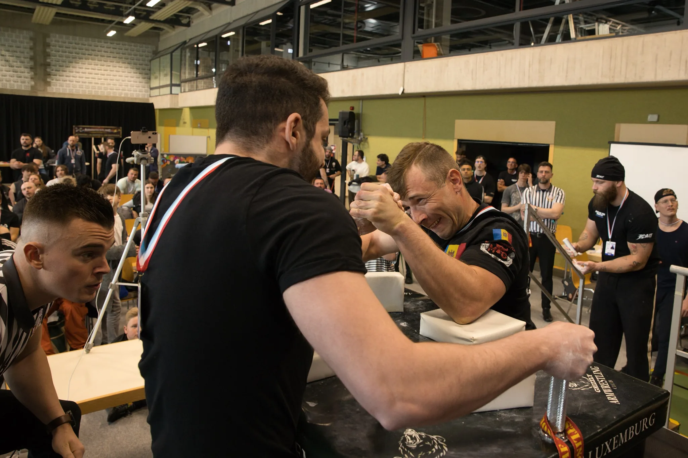
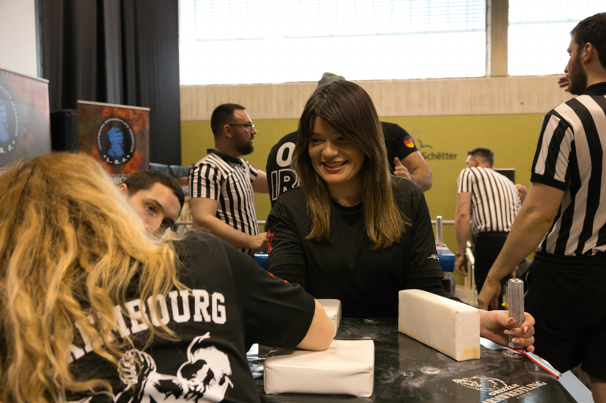
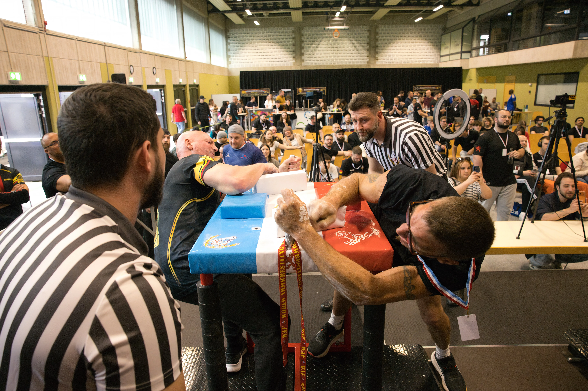
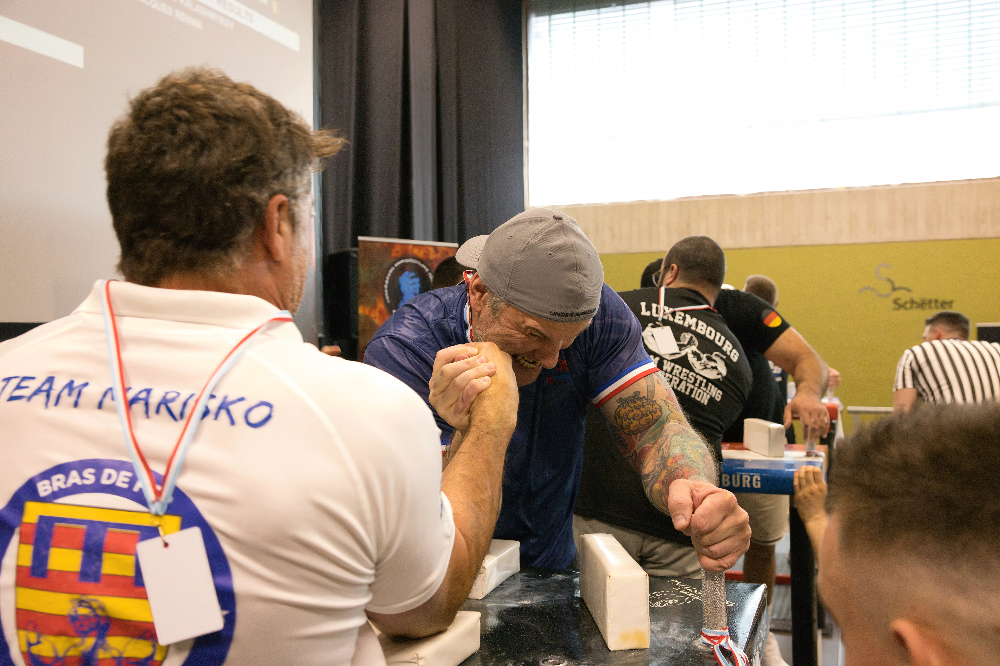

Entraînement, gestion du poids, stratégie tactique, échauffement le jour J et gestion du stress. Tout ce qu'il faut savoir avant votre première compétition de bras de fer.
Votre première compétition de bras de fer approche. Peu importe votre niveau — préparer correctement les semaines qui précèdent fait une différence réelle. Voici l'approche qu'on enseigne à l'Armwrestling Club Strassen.

Analysez votre jeu avec un coach ou partenaire. Top roll ou hook ? Démarrage explosif ou match long ? Cette analyse oriente toute la préparation.
Augmentez le volume : sparring intensif, travail sur table et appareils. C'est la phase de construction de la base physique.
Réduisez le volume, augmentez l'intensité sur des séquences courtes. Travaillez le démarrage — votre tactique doit se solidifier maintenant.
Deux ou trois séances légères maximum. Les tendons ne s'adaptent pas aussi vite que les muscles — les préserver avant la compétition est non-négociable.
Le bras de fer se pratique par catégories de poids — généralement toutes les 10 kg. La pesée a lieu le matin de la compétition. Quelques points clés :
Le sparring régulier est irremplaçable. Pour la compétition, cherchez à vous frotter à des athlètes plus forts que vous — c'est inconfortable mais c'est ce qui force à progresser techniquement. Le club Grizzly de Munsbach, le vendredi soir, est particulièrement adapté pour ce type de sparring intensif.
Quelques exercices particulièrement efficaces pour la préparation compétition :
Important : Les tendons et ligaments s'adaptent beaucoup plus lentement que les muscles. Une progression trop rapide de la charge est la principale cause de blessure. Augmentez le volume progressivement et à la moindre douleur persistante dans les poignets ou les coudes, consultez un professionnel de santé.
Il vaut mieux maîtriser un seul mouvement à la perfection que d'en connaître cinq à moitié. Pour la première compétition, choisissez soit le top roll, soit le hook, travaillez-le intensément, et utilisez-le dans 80% de vos matchs.
La prise initiale et les premières millisecondes du match sont souvent décisives. Travaillez votre démarrage de façon répétitive jusqu'à ce qu'il soit automatique. Un bon démarrage peut gagner un match avant même que l'adversaire n'ait réagi.
En compétition, vous avez le temps d'observer les autres matchs. Regardez les habitudes des adversaires potentiels : préfèrent-ils le top roll ou le hook ? Ont-ils un côté faible ? Sont-ils explosifs au départ ou jouent-ils sur la durée ?
Le jour J suit une logique simple : pesée, récupération, échauffement, matchs. Les essentiels :
Pour le guide opérationnel complet — inscription, format des matchs, fautes à éviter, checklist matérielle et gestion de l'attente entre les matchs : Préparer son premier tournoi →
Le stress avant la compétition est normal — c'est un mécanisme physiologique qui prépare le corps à l'effort. Quelques approches pour le canaliser :



La Luxembourg Armwrestling Competition, organisée chaque année à Munsbach sous l'égide de la Luxembourg Armwrestling Federation, est l'événement phare pour débuter en compétition officielle. Niveau international, athlètes de toute l'Europe, catégories bras droit et bras gauche, toutes catégories de poids. C'est un format idéal pour une première expérience compétitive encadrée.
Rejoignez l'ACS Strassen — coaching technique, sparring régulier et accès aux deux clubs de la LAF.
Strap, fautes, spécifications de la table — maîtriser les règles WAF avant ta première compétition.
Lire l'article →Gestion du poids et timing des repas pour arriver dans ta catégorie sans perdre de force.
Lire l'article →Inscription, logistique, gestion du stress et déroulement d'une journée de tournoi.
Lire l'article →